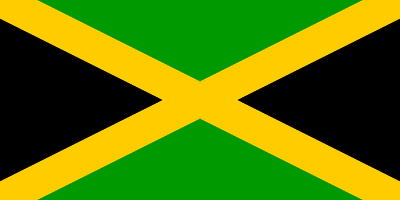
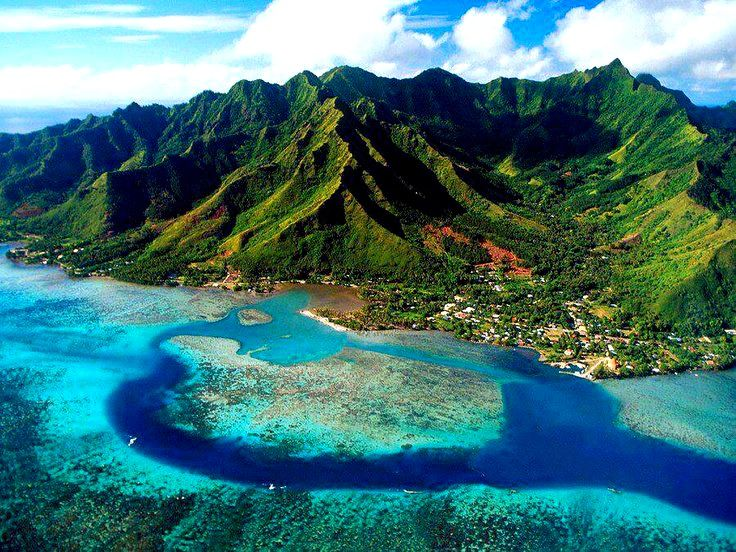

Présentation
La Jamaïque, pays insulaire des Caraïbes, a une topographie luxuriante faite de montagnes, de forêts et de plages bordées de récifs. La plupart des stations balnéaires sont regroupées à Montego Bay, avec son architecture anglo-coloniale, et à Negril, connue pour ses sites de plongée sous-marine et plongée avec tuba. La Jamaïque est réputée pour être le berceau de la musique reggae, et sa capitale Kingston abrite le musée Bob Marley, dédié au célèbre chanteur.
 Culture
De nombreux musiciens jamaïcains ont commencé la musique dans les églises chrétiennes de leur pays. La religion rastafari, mariant des éléments du christianisme à une culture qui s'est développée en Jamaïque au début des années 1930. Il y a aussi quelques synagogues datant du XVII e siècle.